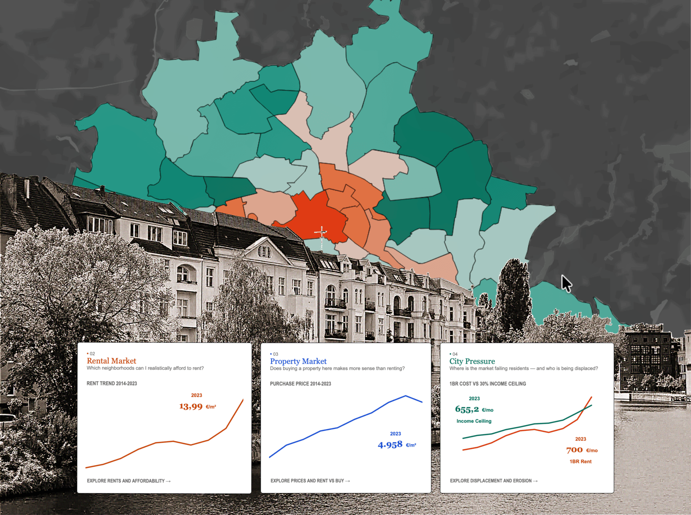
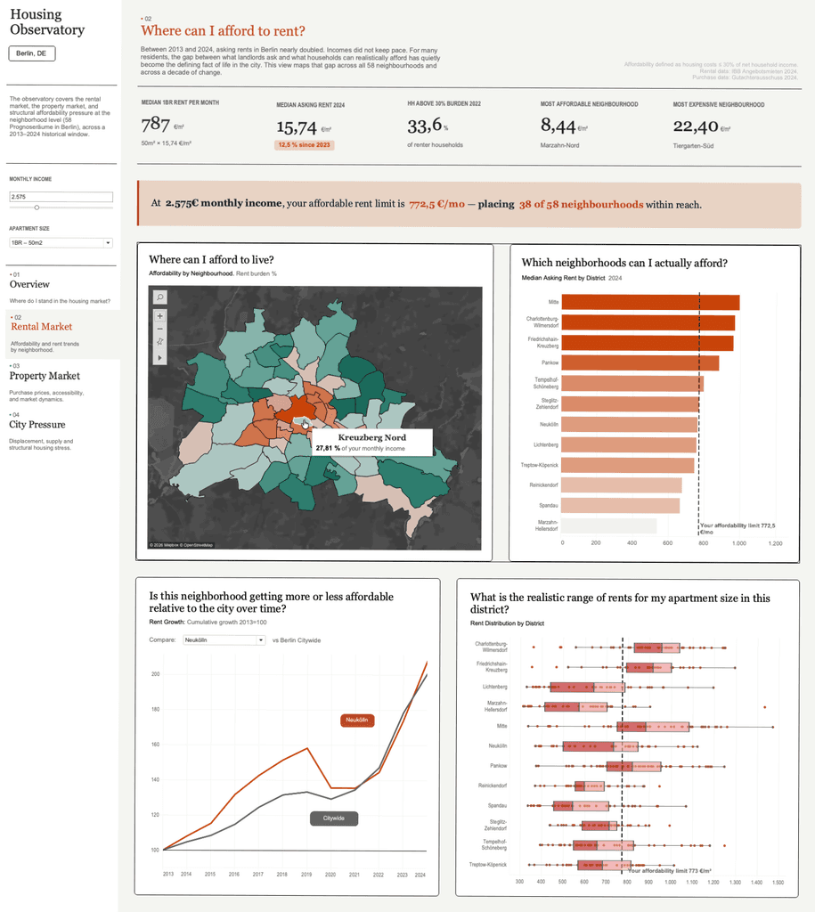
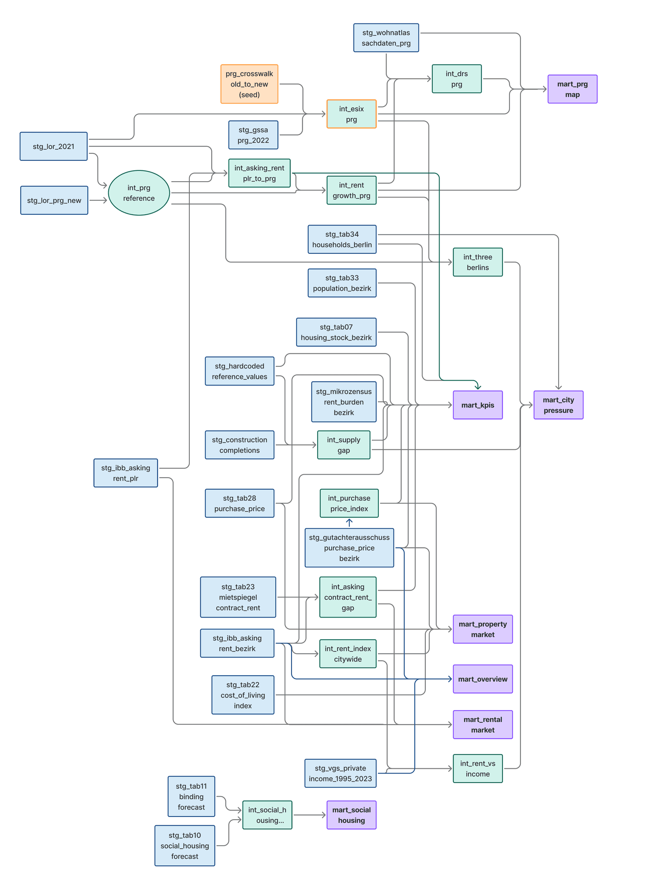

01
The Newcomer
Arriving to a city they don’t know yet.
“Considering my income, which neighbourhoods are affordable to rent?”
Reference
The building blocks of ivan-alfonsoburgos.com, live. Everything below uses the site’s real stylesheet, scripts and project data, so it always shows what the site looks like today.
Each item has a code. When asking for a change, mention it, e.g. “C7 Project card: make the radius 16”.
Use “Add note” on any section to jot down a change. Notes stay in this browser until you clear them.
“Copy for Claude” (bottom right) copies all your notes as one message to paste into the chat.
Warm off-white canvas, white cards, hairline borders, near-black ink. Color comes from project accents and imagery, not from the interface. Hex values are read live from :root.
One accent per project, set in js/projects.js → accent. Chips and the live button use a 25% tint (35% on hover); badges are filled with the accent and carry white text. Rows are generated from the live project list.
| Content color | Value | Where |
|---|---|---|
| Persona: Newcomer / Resident / Researcher | #C8440A #2952CC #1A6B5C | Housing Observatory persona cards (inline --accent) |
| Tile: Staging (bg / border) | #D6EAF8 #1D4E89 | Housing Observatory dbt layers (inline --tile-bg / --tile-border) |
| Tile: Intermediate | #D1F2EB #0E6655 | Housing Observatory dbt layers |
| Tile: Mart | #DCCCFF #874FFF | Housing Observatory dbt layers |
| Not ported from Framer | #8B80CC #FB5C1F #8C7822 | Aside, On Site, Spotlight (reference only) |
Inter everywhere; weight carries the hierarchy (400 read · 500 UI · 600 headings · 700 logo). Georgia only for persona names. Specs on the left are measured live from each sample. Phone sizes: display 36, tagline 32, page title 28, lead 22.
Two-tone lead: <p class="t-lead c-muted"><span class="c-ink">Key sentence.</span> The rest…</p>. Headings in sentence case; uppercase only via CSS on outline buttons, link-card labels and “Scroll for more”.
One scale for everything. Page gutter --gutter: 60 desktop · 30 tablet · 16 phone.
| Context | Value |
|---|---|
Between paragraphs (.prose) | 12 |
| Card padding | 24 (case card, index, tiles, accordion, note) · 20 on large cards |
| Grid and column gaps | 40 · 20 for tight variants and on phones |
| Inside a case-study section | 40 · --tight 20 · --mid 60 · --loose 80 |
| Between case-study blocks / sections | 80 / 120 (80 on phones) |
| Home sections | 80 around each divider · project cards 60 apart |
| Top padding: simple pages / case studies | 193 / 122 |
Six radii; larger surfaces get larger corners.
Cards use 1px solid var(--line); triggers and callouts a 0.5px hairline. Framer draws borders inside the box, so bordered cards trim 1px of padding (19 instead of 20, 23 instead of 24). No shadows at rest: elevation only on hover and for overlays.
1px --lineSoft and sparing: things slide in once and hover states lift with a small spring. Only the availability pulse and the hero tagline loop. All motion switches off with “reduce motion”. Press Replay to see each effect.
data-appear="down" · 0.6s · nav, “Available” pill
data-appear="right" · 0.6s · hero and About text
data-appear="up" · 0.6s · hero card, portrait (no fade)
data-reveal · 0.8s · once · project cards
data-reveal="left" · 0.8s · About teaser card
| Effect | Duration | Easing (live) | Where |
|---|---|---|---|
| Appear on load | 0.6s | | Home and About only |
| Reveal on scroll (once) | 0.8s | | Project cards, Home About teaser |
| Spring | 0.4–0.5s | | Hover shadows, chevrons, “+”, accordion, tagline |
| Fades | 0.2–0.3s | ease | Hover backgrounds, dropdown panel, lightbox |
| Tagline | 4s per line | spring | Home hero (C5) |
| Availability pulse | 1.3s loop | linear | “Available for work” pill (C4) |
Max width 1440px, centered. Project cards are left-aligned at 904; text columns stop at 628. Your window right now: — —
| Breakpoint | Width | What changes |
|---|---|---|
| Desktop | ≥ 1024 | Full layout; case studies have the sticky sidebar |
| Tablet | 810–1023 | Gutter 30; case-study sidebar stacks above the content |
| Phone | < 810 | Gutter 16; nav collapses; grids become one column; cards stack image-first; type scales down |
Two levels, built from js/projects.js. Level 1: Home · About · Selected Works (label shows the current section). Level 2 appears on case studies: Selected Works › Project ▾. Opens on hover (desktop) or tap; keyboard ↑/↓/Esc. On phones the project list folds into the first dropdown. The nav at the top of this page is the live component. Below, both panels shown open.
Dark CTA (36h), outline (36h or 50h with .btn--lg), and the accent-tinted live-project button (48h, full width of its column). “↗︎” marks links that leave the site.
Tools and disciplines, three per project at most. tags appear on cards, pageTags in the case-study sidebar.
Home hero only. The green dot pulses (×2, fading out) every 1.3s. Remove it when not looking for work.
Available for work
One line at a time, 4s each, the next springing up from below. Lines start with an en dash. Keep it to 3–5 lines. (Sample below; the real lines live in index.html.)
– blending design, research, and analytics. – eager to apply my diverse skillset. – equal parts detail-oriented and big-picture thinker. – passionate about transforming data into visual insights.
White card, max 432 wide, image (392:366) and an uppercase label with an arrow. Hover: large shadow, arrow nudges. Used for the Home hero (→ Works) and the About teaser (→ About).
Rendered from js/projects.js (first project shown). 904 × 520, info column 346, image with “+” button. Hover: shadow, “+” turns 90°. Reveals on scroll. On phones: image on top.
Title card + section index + live button, 299 wide. Height rule: on desktop the three together are exactly as tall as the hero beside it, and stay sticky while the content scrolls; the title card takes the extra space. If the content can’t fit, the hero grows instead. Index links come from sections with data-toc.
Hero is cropped to 966:746 (export at 2×, 1932 × 1492+); image or muted looping video. Quick facts always list Type · Category · Timeframe · Tools.

Every case-study section: eyebrow (repeats the index label) + h2 that says something about it, then .prose (max 628, paragraphs 12 apart, bold for key terms).
Sources
The dashboard draws on 24 different tables from several different sources:
Some of these figures were buried inside PDF tables and required manual extraction.
Callout for a definition (“What is a…?”), with a 60px icon. Note for one caveat or takeaway, in italics.
A high score means the conditions enabling displacement are present, not that displacement has already occurred.
Default tile on --fact; colored tiles set --tile-bg / --tile-border inline; numbered and question variants. Usually in .cols-2 / .cols-3.
Short explanation of one idea.
Staging layer colors from Housing Observatory.
Accent badge + 23px question.
1
Numbered tile
Big number, bold title, one sentence.
Accent background with light text, Georgia name, quoted question. Set --accent inline per persona.
Arriving to a city they don’t know yet.
“Considering my income, which neighbourhoods are affordable to rent?”
Numbered steps (30px accent badge) can point at an annotated image (badges placed in % of the image). The arc list tells a 3–5 step story.
The persistent left panel carries the global parameters.
View 01 establishes the personal baseline.
View 02 zooms into the rental reality.

1 2About page questions. Closed cards tint on hover; the body opens with a spring. Several can be open at once. (Live, click it.)
Answers are 16px in the secondary gray.
Bottom of each case study, built from every other project. Portrait images (368:459, from card). Arrows only appear when the cards overflow. (Live; here it lists all projects.)
Dark, four columns: “Say Hello”, email and socials (from SITE in js/projects.js), then © year, Berlin + live time, “Made with ♡︎︎ from scratch”, Imprint. The footer at the bottom of this page is the live component.
Add data-zoom to an image to open it full size on click (Esc closes). Media blocks are full width with radius 16. Videos: muted loop playsinline preload="metadata" data-autoplay; they play only while on screen.

Divider, “Scroll for more” hint, the “+” button and numbered badges.
How the components combine on each page. Links open the real pages.
Hero (pill, headline, tagline, link card) → Selected Works cards → About teaser → footer.
Selected WorksPage title → all project cards.
AboutStatement + lead beside portrait → accordion beside “open for opportunities” card.
Case studySidebar + hero → quick facts → sections (eyebrow + h2) → retrospective → more projects.
ImprintTitle + date → address card beside legal text.
New case study templateStarting point for the next project (copy it, add the project to projects.js).
Measured live against WCAG 2.1 (small text 4.5:1, large text 3:1). The amber pairs come from the original Framer design and are kept for fidelity; don’t extend them to new elements.
| Text | On | Ratio | Status | Used for |
|---|
Also: visible focus ring (2px solid --ink), real links and buttons with aria-expanded / aria-current, one <h1> per page, and all motion off for “reduce motion”.
Newest first. Claude adds an entry here (and updates DESIGN.md) whenever the design changes.
main now publishes the site automatically; old Framer project links still redirect to Selected Works.--muted (new .c-ink utility). --soft is now used for the hero tagline only.height: auto); fixes the stretched four-views image on Housing Observatory.DESIGN.md and this page.js/projects.js; the two data viz case studies ported.